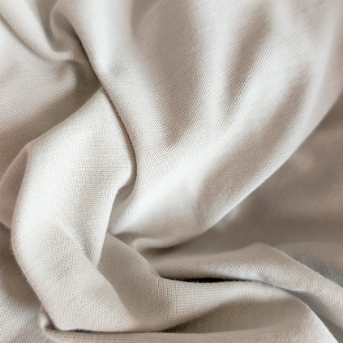
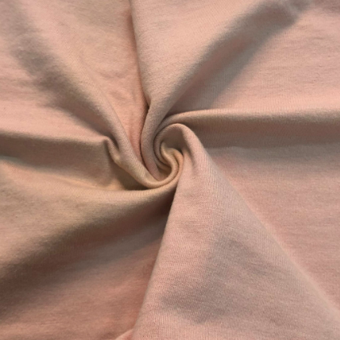
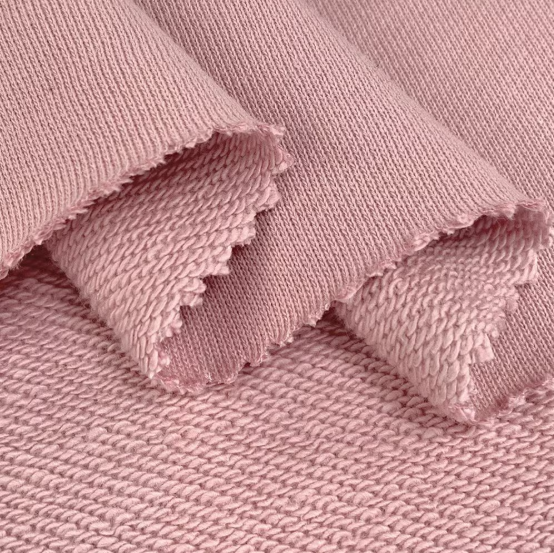
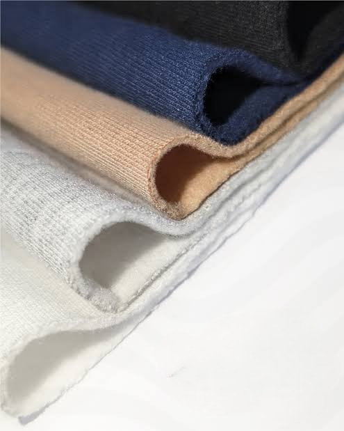
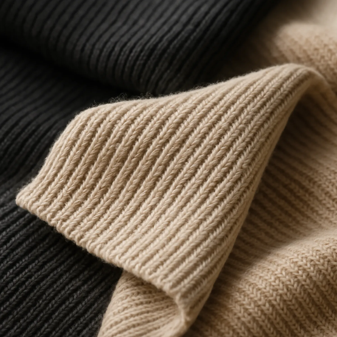

Beige / Crema
En Stock
TEÑIDO REACTIVO / ALGODÓN PEINADO
En Stock
Jersey Algodón Peinado 20/1
Tejido de punto de algodón de alta densidad y tacto suave.
Venta por Kilo (A partir de 1 kg):
S/ 38.00 / Kilo
Venta por Rollo (Aprox. 20 - 22 kg):
S/ 35.50 / Kilo por Rollo Cerrado
assignment Especificaciones del Tejido
- Composición: 100% Algodón Peinado
- Gramaje: 200 - 210 g/m²
- Rendimiento: 2.30 a 2.40 mt/kg
- Ancho: 0.90 m tubular / 1.80 m abierto
- Teñido: Reactivo (No destiñe ni encoge más del 3%)
4 colores disponibles
¿Cómo pedir?
Simple, rápido y sin salir de tu taller
🎨
1. Elige tus colores
Selecciona y agrega al carrito
💬
2. Mándanos por WhatsApp
Envía tu carrito o solicita tu cotizacion
📋
3. Te enviamos cotización
Con precio final y envío a tu ciudad
💳
4. Pagas
Transferencia, Yape, Plin o tarjeta
🚚
5. Recibe tu tela
A cualquier parte del Perú
TELAS SIMILARES QUE TE RECOMENDAMOS



